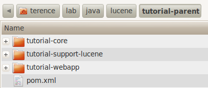

本著作係採用創用 CC 「姓名標示 2.5 台灣版」授權條款釋出。
Home
本著作係採用創用 CC 「姓名標示 2.5 台灣版」授權條款釋出。
Home
主要是用SpringMVC做Lucene index查詢呈現，使用的index是前一篇建立的index。目的除了練習maven之外，還可以練習熟悉一下SpringMVC。
這個tutorial project規劃也是multi-module的方式，parent module就命名為tutorial-parent，分別還有tutorial-core、tutorial-webapp和tutorial-support-lucene。（如下圖所示）
每個module要做的事情說明如下
完整程式在此 code。
如果使用context:component-scan要掃描多個路徑下的設定，就只要多寫幾次context:component-scan即可
<context:component-scan base-package="net.greenrivers.lucene.tutorial.support.lucene" />
<context:component-scan base-package="net.greenrivers.lucene.web" />
<bean id="searchServiceManager" class="net.greenrivers.lucene.tutorial.core.SearchServiceManagerImpl">
<property name="service" ref="luceneSearchService" />
</bean>
除了dependencies可以由parent module繼承之外，共用的參數和properties也可以由parent module繼承下來。因此在這裡把dependency version的設定放到parent module裡面，將來要改參數就可以套用到所有child modules。